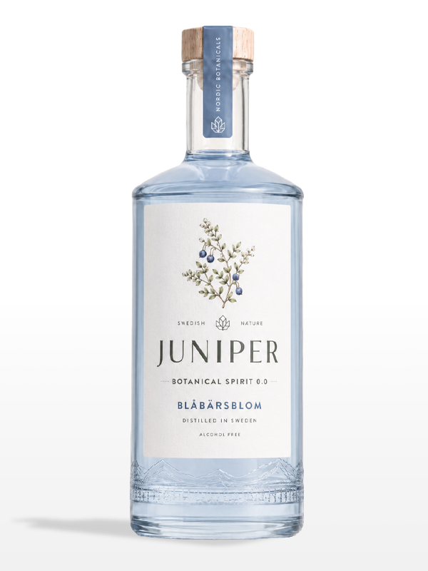
Blåbärsblom
Blåbärsblom har en klar och sval ton med en subtil bärighet som ger djup och tydlighet. Smaken är krispig, modern och stilren, en lugn blå nyans i smakform med ett stilla och självsäkert uttryck.
INSPIRERAD AV NATUREN
SKAPAD FÖR STUNDER SOM STANNAR KVAR
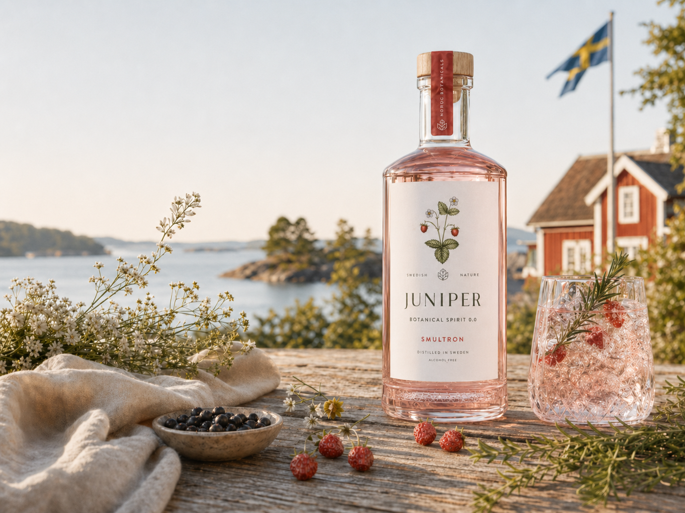
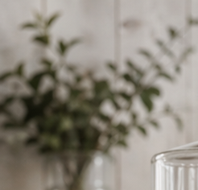
Varje flaska utformas med naturen som inspiration. Nordiska råvaror plockas när de är som mest aromrika och förädlas varsamt för att bevara sin rena karaktär. Genom långsam destillering och noggrant utvald infusering fångas essensen av bär och blommor i en alkoholfri botanisk upplevelse med djup och balans. Inga genvägar, inga onödiga tillsatser, bara rena råvaror som lyfts till sin mest eleganta form.
Varje flaska formas av naturens mest aromrika nordiska råvaror, varsamt förädlade. Genom långsam destillering fångas bär och blommor i en alkoholfri upplevelse med djup och balans.
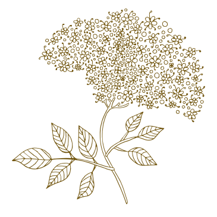

Blåbärsblom har en klar och sval ton med en subtil bärighet som ger djup och tydlighet. Smaken är krispig, modern och stilren, en lugn blå nyans i smakform med ett stilla och självsäkert uttryck.
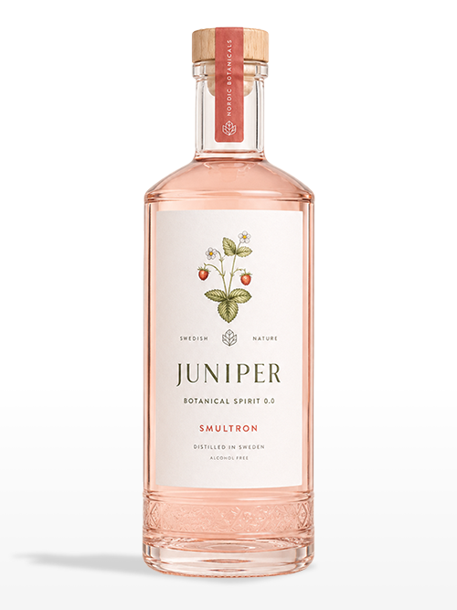
Smultronessensen är mjuk och bärig med en naturlig, varm rundhet. Den har en len och följsam karaktär som dröjer sig kvar och skapar en harmonisk bärprofil med mjukt djup.
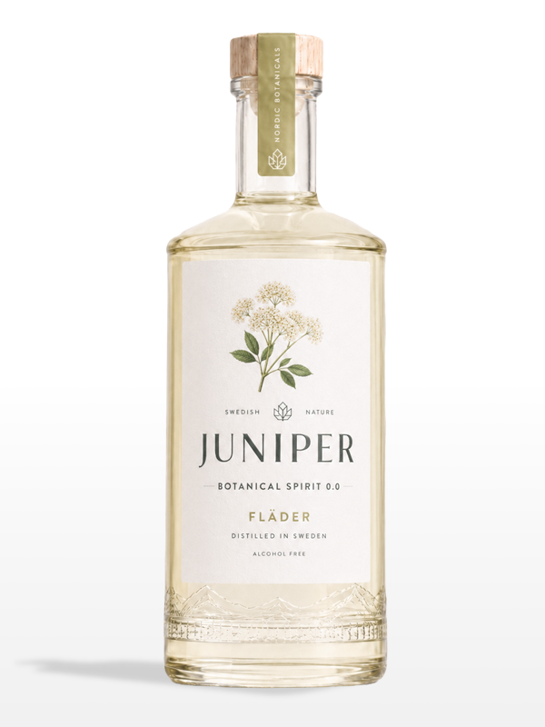
Fläder har en elegant, floralt skimrande ton med en mild och naturlig mjukhet. Smaken är ljus, fräsch och väl avvägd, ett tidlöst, nordiskt blomuttryck med förfinad elegans.
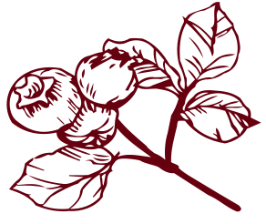
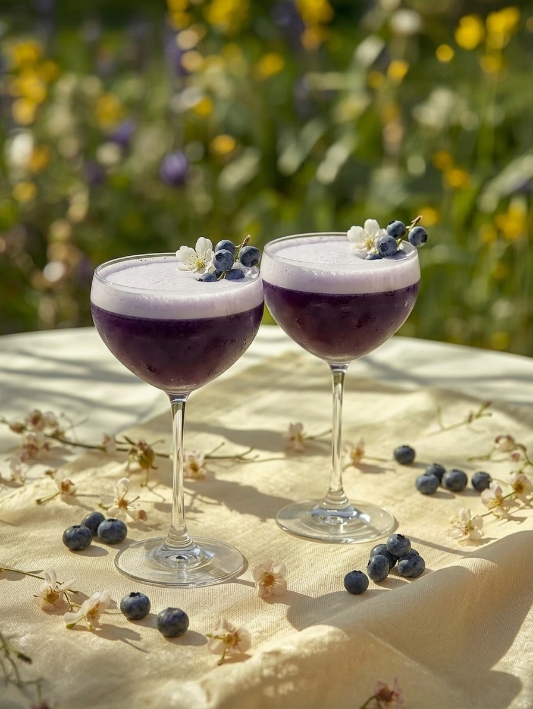
En frisk och somrig blåbärsdrink med balanserad syra från citron, mjuk sötma och en lätt botanisk ton. Len, bärig och uppfriskande, med ett fint skum på toppen som ger en lyxig känsla.
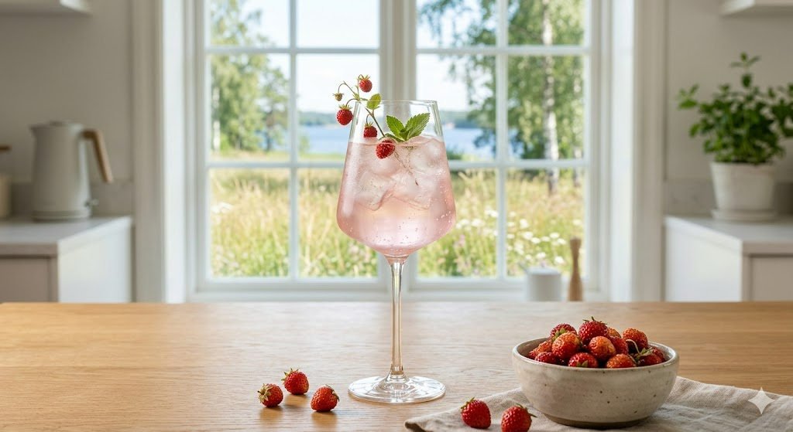
Smultron Spritz alkoholfri är en frisk och bubblig sommardrink med söt smak av smultron, toppad med alkoholfritt mousserande vin och en skvätt sodavatten. Lätt, bärig och somrig, perfekt som välkomstdrink när du vill ha festkänsla utan alkohol.
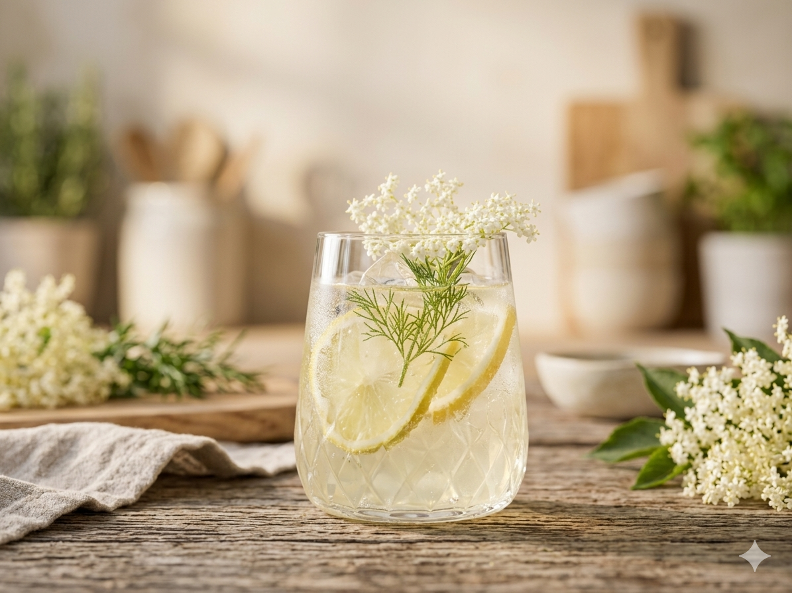
Fizzy Fläder är en frisk och alkoholfri sommardrink med blommiga toner av fläder, balanserad med syrlig citron och toppas med sprudlande sodavatten. Lätt, uppfriskande och elegant, perfekt för varma dagar och festliga stunder.
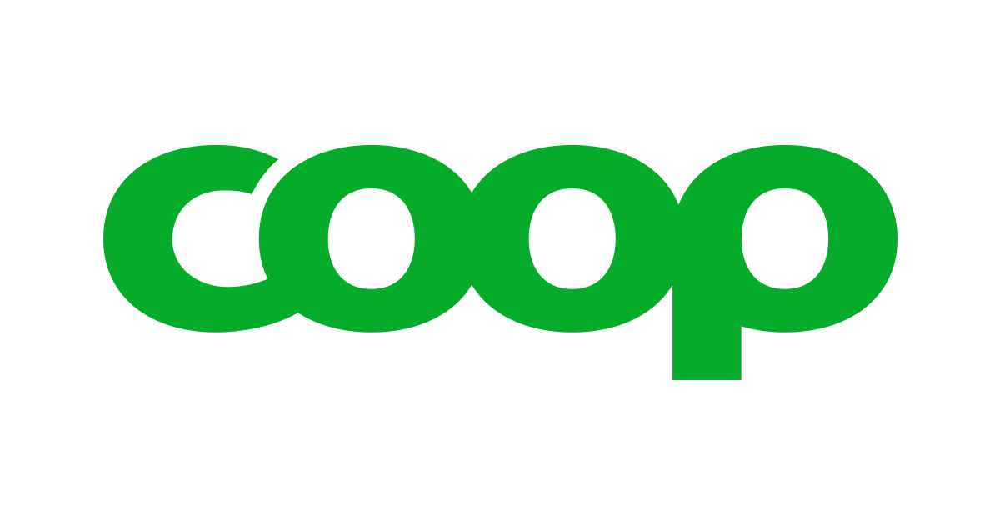